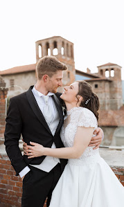
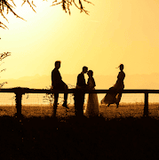
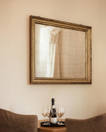
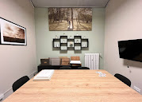
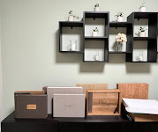

01
Matrimoni
Dai preparativi all'ultimo ballo, un reportage discreto che racconta la giornata così come l'avete vissuta.
- Copertura fino all'intera giornata
- Servizio di coppia in location
- Galleria online privata + album fine art
Matrimoni, ritratti e famiglie a Cuneo, nelle Langhe e in tutto il Piemonte. Uno sguardo discreto, luce naturale e immagini che fra vent'anni vi emozioneranno ancora.


Passa sopra una foto (o toccala) per vedere come è stata scattata. Nessuna posa rigida: momenti che succedono, colti al momento giusto.
Vi piace questo modo di raccontare? Parliamo della vostra storia.
Scrivimi su WhatsAppOgni servizio nasce da una chiacchierata: capisco cosa vi serve davvero e vi propongo solo quello. Preventivo chiaro, tutto incluso, nessun costo nascosto.
Dai preparativi all'ultimo ballo, un reportage discreto che racconta la giornata così come l'avete vissuta.
Engagement, anniversari, ritratti personali e professionali. Vi guido io, senza pose forzate.
La vostra famiglia com'è adesso, prima che cresca. In studio a Cuneo, a casa vostra o all'aperto.
Le Langhe, il Monviso, le valli cuneesi. Stampe fine art e immagini per cantine, agriturismi e strutture.
«Non vi chiederò di stare in posa per ore. Vi chiederò solo di esserci. Al resto penso io.»
Sono Luca, fotografo a Cuneo. Racconto matrimoni, coppie e famiglie con un approccio da reportage: osservo, anticipo, intervengo solo quando serve. Il risultato sono immagini naturali, eleganti e senza tempo, in cui vi riconoscerete davvero.
Nel mio studio potete sedervi con calma, sfogliare gli album, toccare le carte di stampa e decidere insieme a me, senza fretta e senza impegno.



Vi godete la giornata. Io ci sono, ma non mi vedete.
Colori fedeli e pelle vera, con un'eleganza che non passa di moda.
Cosa è incluso, tempi di consegna, costi: scritto nero su bianco.
Quattro passaggi semplici. Il primo richiede un minuto.
Su WhatsApp o dal modulo: data, luogo e tipo di servizio. Vi rispondo entro 24 ore con la disponibilità.
In studio a Cuneo o in videochiamata. Parliamo di voi e ricevete un preventivo chiaro.
Voi vivete il momento, io lo racconto. Nessuna regia pesante, solo qualche consiglio al momento giusto.
Un'anteprima in pochi giorni, poi la galleria online privata e, se lo desiderate, l'album fine art.
Non trovate la vostra domanda? Scrivetemi: rispondo io, personalmente.
Fai una domandaPer i sabati da maggio a settembre conviene muoversi 9–12 mesi prima, perché le date vanno via in fretta. Scrivetemi la data: vi dico subito se è libera e posso bloccarla per qualche giorno.
Dipende da durata, location e prodotti (album, stampe). Preferisco un preventivo su misura a un listino generico: mandatemi data, luogo e tipo di servizio e ricevete una proposta chiara, con tutto incluso e nessun costo nascosto.
Certo: Langhe, Roero, Torino, Liguria e anche matrimoni all'estero. Eventuali trasferte sono indicate in modo trasparente nel preventivo.
Un'anteprima arriva nei giorni successivi, per condividere subito l'emozione. La galleria completa, selezionata e curata una a una, arriva in poche settimane; i tempi esatti sono scritti nel contratto.
Sì. Tutte le foto selezionate vi vengono consegnate in alta risoluzione tramite una galleria online privata, pronte da stampare, scaricare e condividere con parenti e amici.
Idealmente nei primi 5–15 giorni di vita, in un ambiente caldo e tranquillo. Si seguono i ritmi del bimbo: pause per poppate e coccole sono previste. Nessuna posa forzata, la sicurezza viene prima di tutto.